Από την προετοιμασία στην τελετή
Στιγμές γάμου μέσα από τον φακό μας.
Η ιστορία της συλλογής
Στις 38 φωτογραφίες αυτής της συλλογής, η προετοιμασία του γαμπρού συνδέεται με την τελετή και τα πορτρέτα του ζευγαριού. Φίλοι και συγγενείς συμμετέχουν στις στιγμές πριν από τον γάμο, ενώ κοντινές λήψεις αναδεικνύουν το ρολόι, τα παπούτσια, τις βέρες και τα λουλούδια. Ακολουθούν εικόνες από τα χέρια του ζευγαριού στην τελετή, την έξοδο ανάμεσα στους καλεσμένους και τα κοινά τους πορτρέτα.
Φωτογράφος & βιντεογράφος γάμου στη Ρόδο · Φωτογράφιση ζευγαριών στη Ρόδο
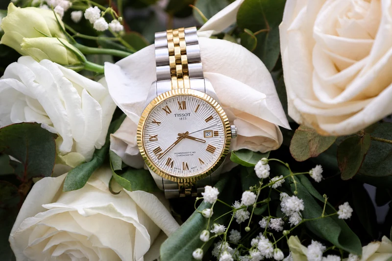
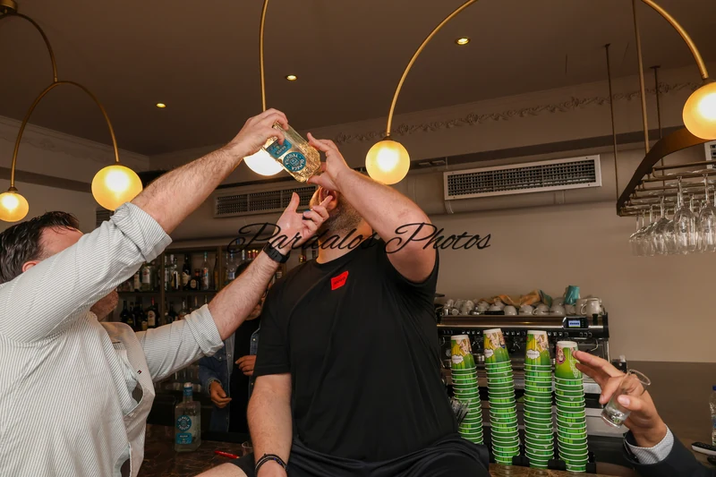
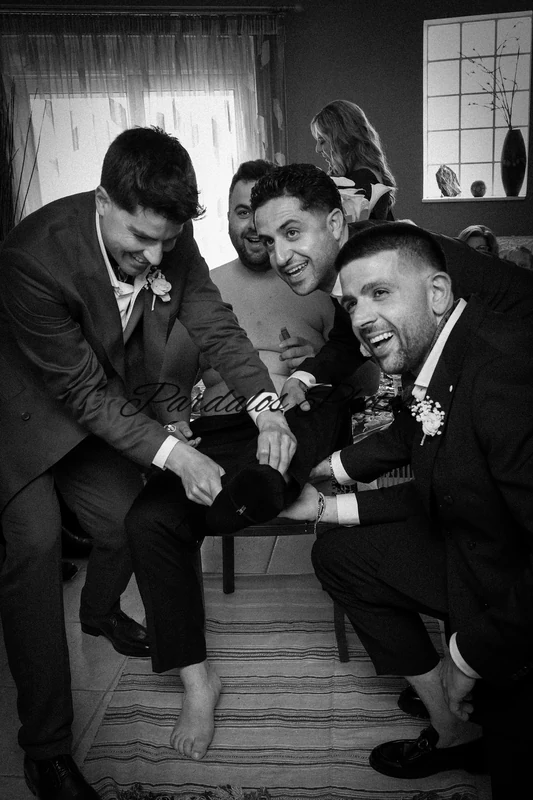
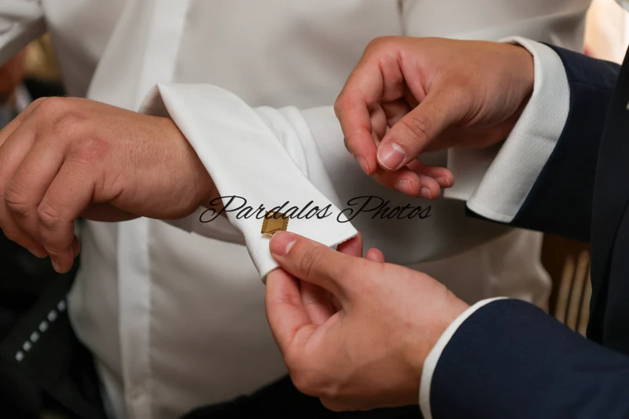
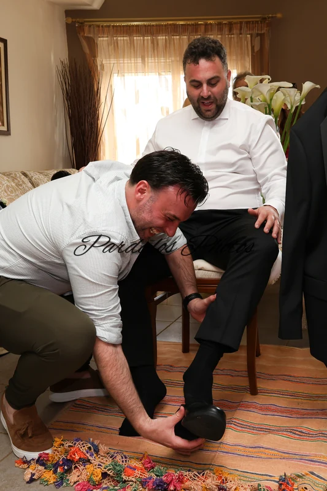
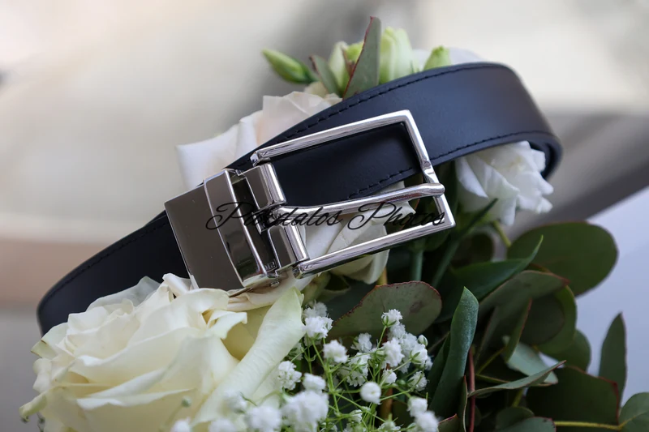
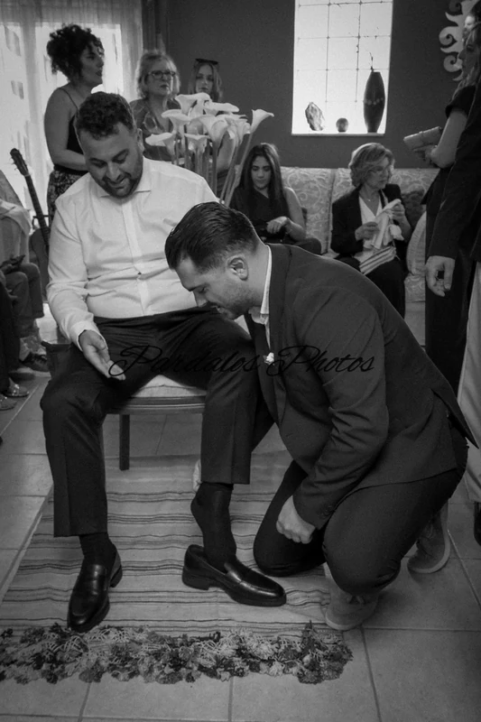
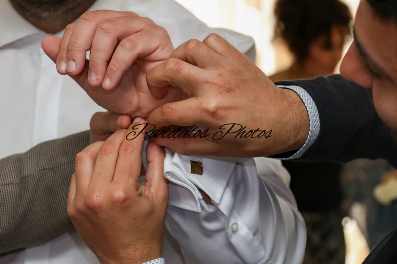
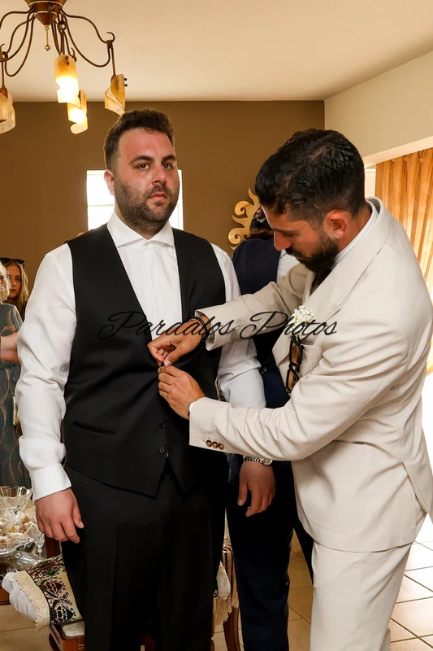
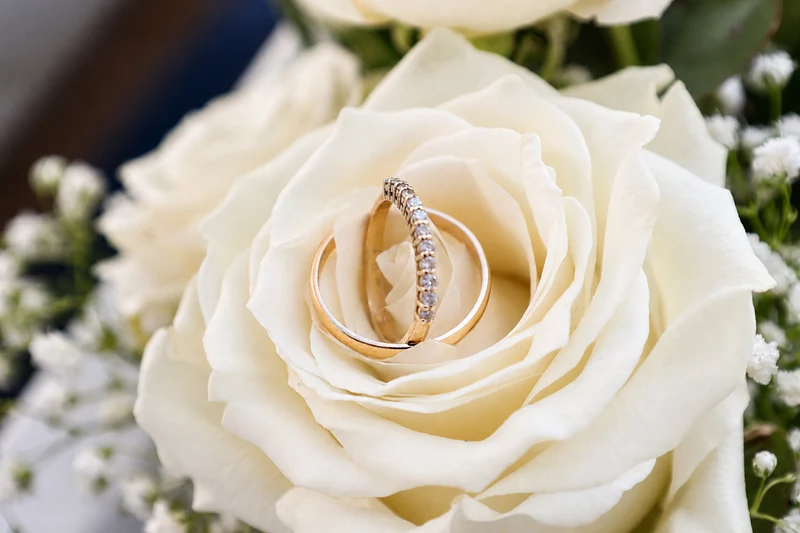
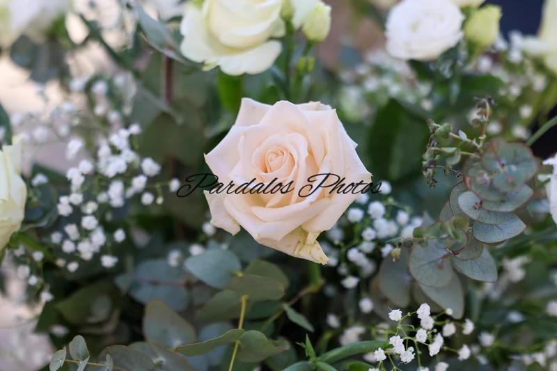
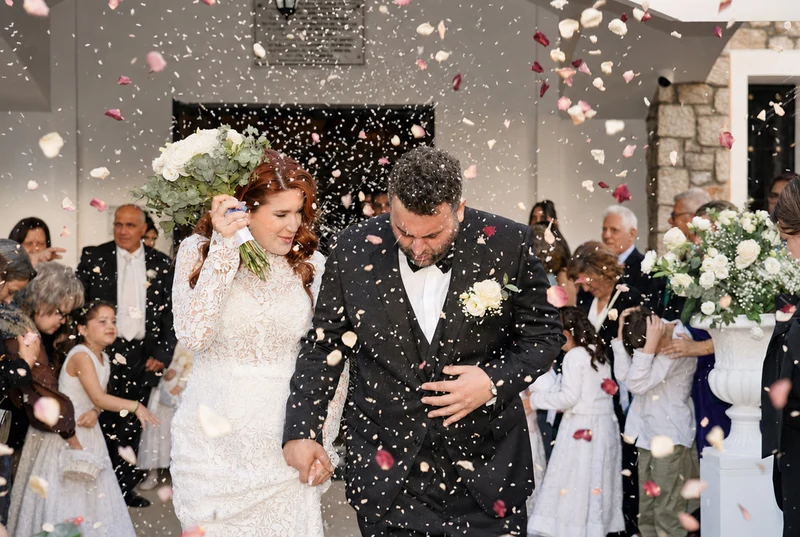
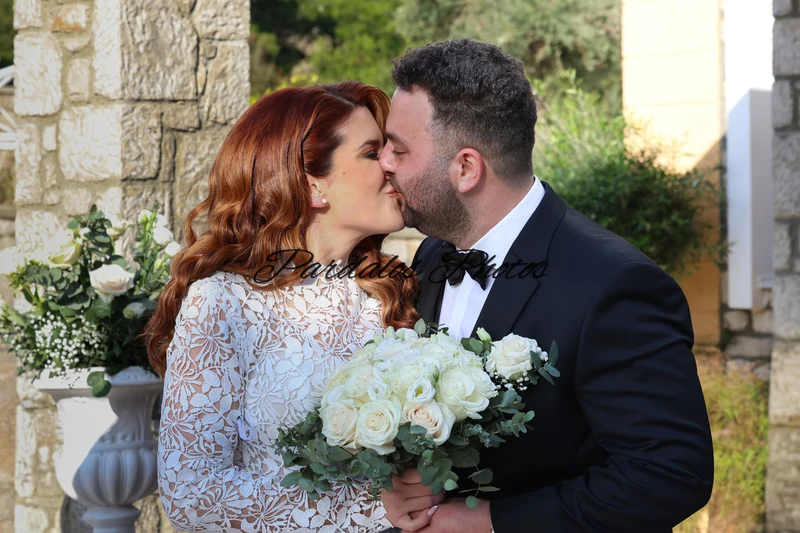
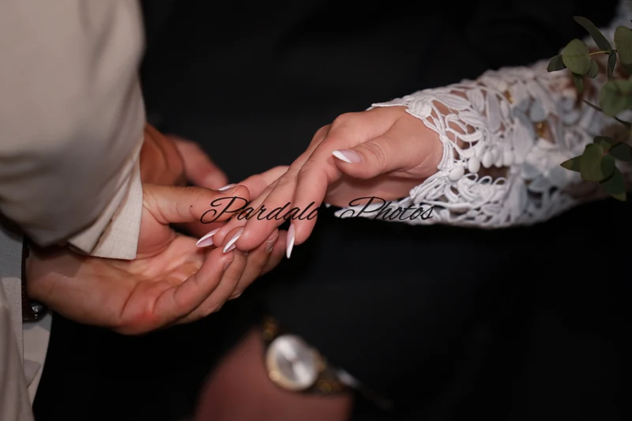
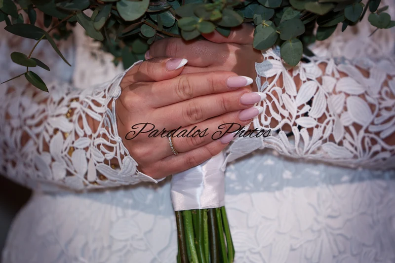
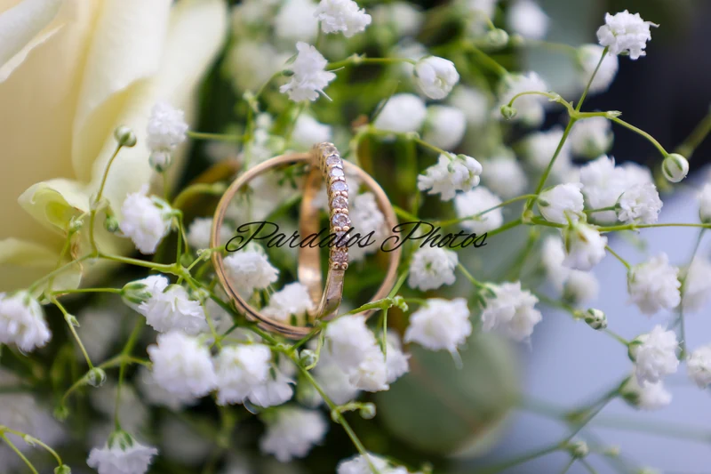
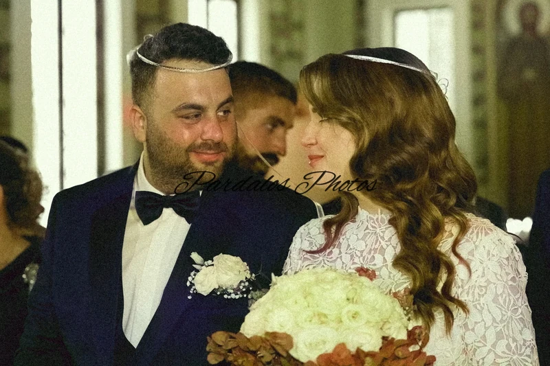
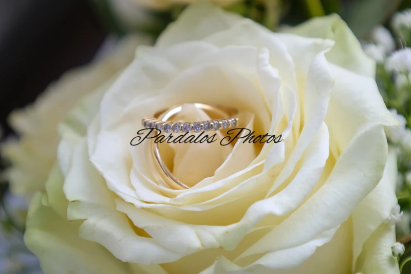
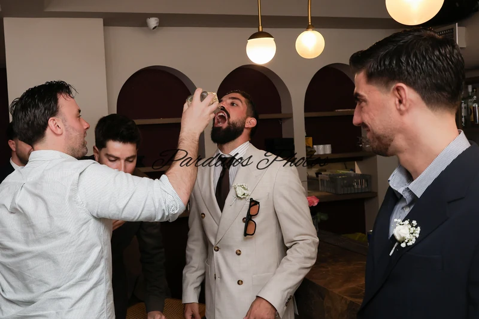
Θέλετε να μιλήσουμε για τη δική σας ημέρα;
ΕΠΙΚΟΙΝΩΝΗΣΤΕ ΜΑΖΙ ΜΑΣ